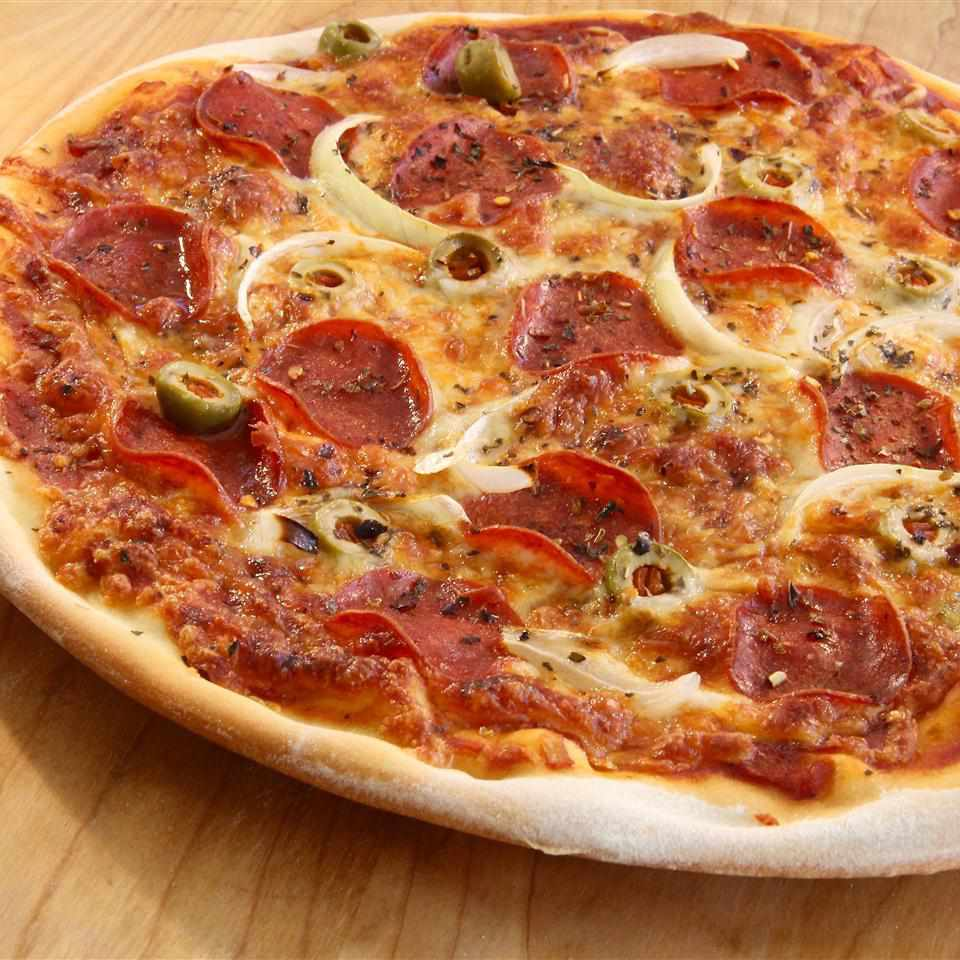

Pizza Recipe

Description
Savor the crisp perfection of this Thin Crust Pizza. A delicate balance of crunch and tenderness. Topped with premium ingredients, it's a delicious celebration of simplicity and taste!
Ingredients
- 1 teaspoon active dry yeast
- ¼ teaspoon white sugar
- ¾ cup lukewarm water
- 2 cups all-purpose flour, divided
- ½ teaspoon salt
Steps
- Dissolve yeast and sugar in warm water that's 110 degrees F (44 degrees C) in a small bowl. Let stand until yeast softens and begins to form a creamy foam, about 5 to 8 minutes.
- Combine 1 3/4 cups flour and salt in a large bowl. Pour in yeast mixture; mix well until dough comes together.
- Transfer dough to a floured surface and knead until smooth, about 2 minutes. Add remaining 1/4 cup flour if dough is too sticky.
- Roll dough into a 12-inch circle. Transfer to a greased pizza pan.
- Top crust as desired and bake at 500 degrees F (260 degrees C) until golden, 8 to 10 minutes.